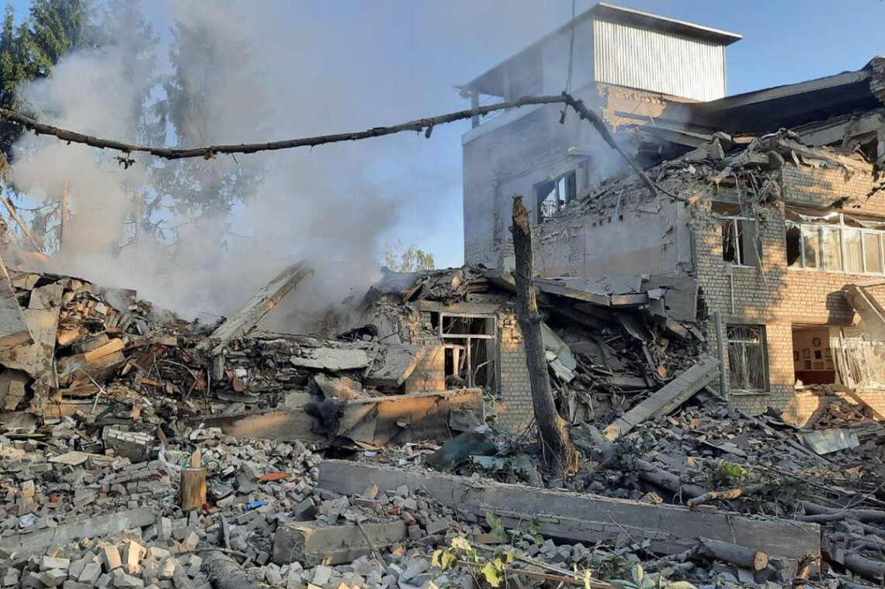
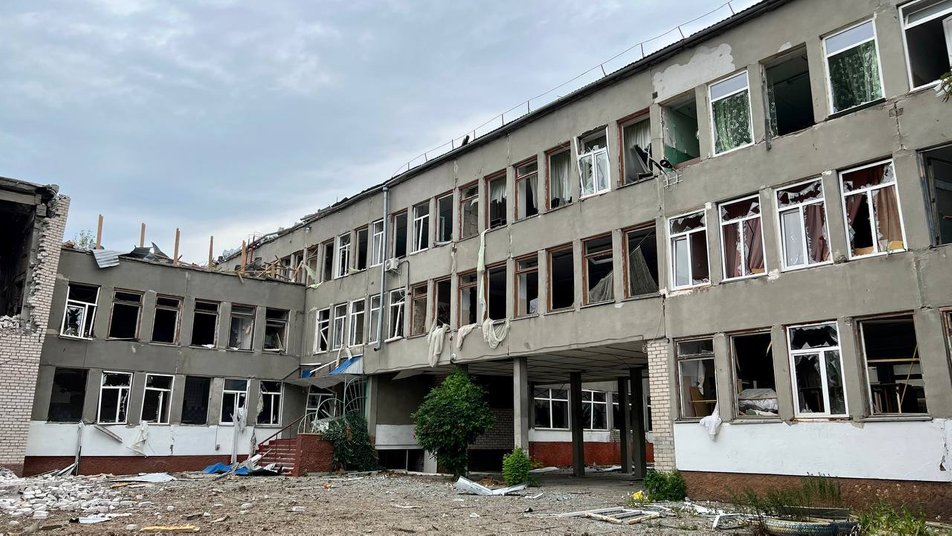

За час війни з росією в Україні було знищено та пошкоджено
більш ніж 2550 освітніх закладів
Мапа: Процент пошкоджених та зруйнованих установ освіти на території України під час війни
2260 освітніх закладів пошкоджено
Серед них:
819 - дошкільна освіта
1031 - повна загальна середня освіта
99 - позашкільна освіта
19 - спеціалізована освіта
28 - спеціальна освіта
112 - професійна освіта
99 - фахова передвища освіта
50 - вища освіта
3 - освіта дорослих
Діаграма: Процентне відношення типів пошкоджених закладів освіти
Я від Ізюму й Балаклії… звикати до таких речей не можна,
але після Бучі здивованими тими кроками,
які робили російські терористи, ми вже не будемо,
тому що бачимо те саме. Знову катування… знову руйнація:
школи, садочки…
У них один і той самий слід. Нічого нового я не побачив
- Президент України Володимир Зеленський

Зруйнована школа в місті Харків. Джерело: Олег Синєгубов, голова Харківської ОВА
Мапа: Кількість пошкоджених освітніх установ на території України за час війни
291 освітній заклад зруйновано
Серед них:
82 - дошкільна освіта
150 - повна загальна середня освіта
20 - позашкільна освіта
1 - спеціалізована освіта
4 - спеціальна освіта
15 - професійна освіта
12 - фахова передвища освіта
7 - вища освіта
Діаграма: Процентне відношення типів зруйнованих закладів освіти
Мапа: Кількість зруйнованих освітніх установ на території України за час війни
Потреби в навчанні ми захищаємо та оберігаємо всупереч руйнуванню.
Для цього Міністерство працює над новим пріоритетом –
план повоєнної освіти та посилення військово-патріотичного виховання.
Це буде нова модель української освіти, що допоможе
відбудувати країну та подбати про майбутнє -
міністр освіти і науки Сергій Шкарлет

Зруйнована школа в місті Миколаїв. Джерело: Сєнкевич Online
Зроблено Achating за данними МОН від 22 вересня 2022 року